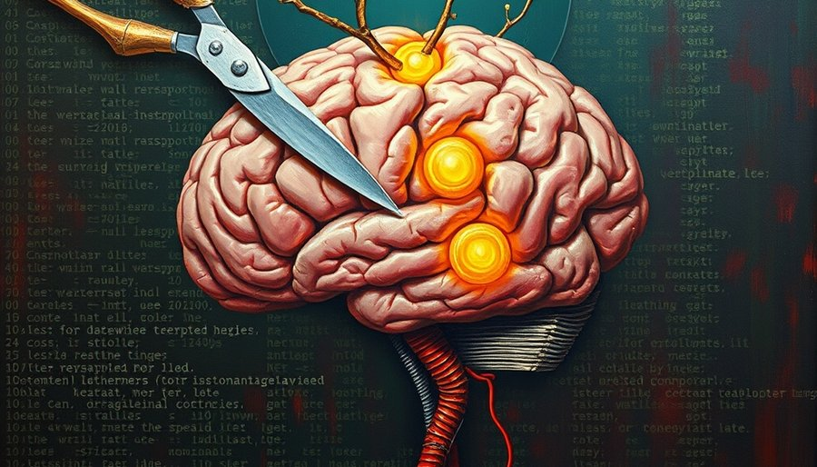
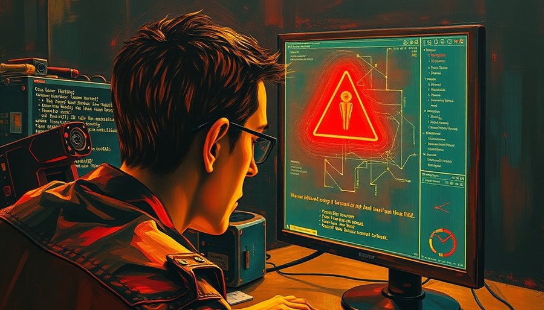

2025年底冒出来的Oh My Pi，是一个把IDE接进终端的编程agent，功能表长得吓人：60多家模型商、30多个内置工具、哈希锚定编辑、LSP深度集成、真调试器驱动。但真正让它出挑的，是它的记忆系统。它默认用一套叫Hindsight的机制做跨会话记忆：有retain写事实，recall取回，reflect综合，learn沉淀可复用经验。这些不算稀奇。稀奇的是那层“心智模式”：每次会话结束时，它把整场对话压缩成三个摘要——用户偏好、项目约定、项目决策——每个只有约800 token，存成心智模型。下次会话第一轮，这层心智直接拼进提示词，不再每轮付一次检索成本。
这做法反常。过去两年，AI编程助手卷记忆，基本都在卷容量：谁能存下更长历史、更大代码库、更多对话轮次。上下文窗口从4K扩到128K，RAG从向量检索做到图谱，生怕漏掉一点信息。Oh My Pi偏偏反着来：它主动遗忘掉绝大部分对话细节，只留三条高度提炼的判断。就像一个同事，不记你上个月每句话，但记得“这人喜欢先写测试”“这个项目禁止用全局变量”“上次我们决定用Rust重写核心模块”。你下次找他，他直接按这三条开工，比翻聊天记录快得多。
为什么“存得多”不是答案？因为agent记忆的真正瓶颈，从来不是存储容量，而是“每次要喂给模型看多少”。Oh My Pi的系统提示已经约22K token——工具定义、规则、示例占去一大截。如果每次会话还要把历史对话全塞进去，窗口很快被挤满，模型推理质量直线下降。更隐蔽的成本在检索本身：每次recall都是一次往返，消耗token，增加延迟。你以为是“记住更多”，实际上是在每轮对话里交一笔记忆税。
心智模式把这笔税取消了。它把“检索”降级成“加载缓存”：会话开始时，三个摘要随prompt自动带上，零往返，零额外token消耗。这等于把记忆从“查询式”变成了“摘要式”。查询式记忆像数据库：存进去，用时搜出来，搜得准不准另说。摘要式记忆像专家的大脑：平时提炼关键点，临场直接调用，不翻档案。Oh My Pi的设计者显然想清楚了：记忆的价值，取决于被调用时的新鲜度，加上取用成本，而不是存量本身。存一整个代码库，如果每次取用都要付一大笔token费，那它就不是资产，是负债。

心智模式最值得拆的，还不是压缩本身，而是它怎么决定“该忘什么”。这里有两个细节。第一个是delta触发：心智只在积累的事实发生实质变化时才重新压缩，不强刷。你改了一个项目约定，它才更新那条心智；没改，它就沿用旧摘要。这省下了每次会话结束都重算一遍的算力，也避免了频繁重写心智带来的不一致风险。第二个是source_query：当模型需要从记忆库里召回事实时，用的不是关键词匹配，而是一段prompt——“从记忆库里挑出值得长期记住的”。这等于在设计层面承认，记忆的价值不取决于精确匹配，而取决于模型自己判断什么重要。
这两个细节加起来，完成了一次转向：从“存下来”到“记什么”。人类记忆本来就是这么干的。遗忘曲线不是缺陷，是带宽保护。没人记得住写过的每一行代码，但一个老手一定记得“这个项目有三条硬约定”“这个人有两个雷点”。老手的记忆不是存得更多，是知道什么该忘。Oh My Pi那三个心智——用户偏好、项目约定、项目决策——几乎就是对“和熟人长期协作”的忠实仿真。它不试图当你的第二大脑，它试图当那个最懂你工作方式的同事。

当然，压缩必然有代价。把一整场对话压成800 token，细节一定会丢失。如果模型在提炼时判断失误，把次要信息当成核心约定，或者漏掉了真正重要的决策，那下次会话的心智模式就可能误导。一个开发者可能发现，助手记得“你喜欢用React”，但忘了“上次你决定这个组件必须用原生实现”。这种错误一旦发生，比没有记忆更麻烦——因为它会带着自信给出错误方向。
Oh My Pi用两个机制兜底：delta触发保证心智不会在无关变化时被重写，减少了每次压缩引入新错误的概率；source_query的prompt方式则允许模型在需要时重新审视记忆库，而不是死守之前的关键词匹配。但底牌还是那个：它默认模型会越来越聪明，提炼能力会越来越强。这恰恰是技术圈正在吵的那架：Pi押注减法，认为模型够聪明，脚手架就是拐杖，四个工具足矣；Oh My Pi押注加法，功能堆积去补齐模型的笨拙。但当一个加法派agent把“记忆”做成“遗忘”，它等于默认了模型未来不需要人喂这么多——我们拼命造脚手架，恰恰是为了有一天用不上脚手架。
如果记忆工程的下一个对手真的是遗忘本身，那下一个被推翻的产品假设会是什么？“上下文永远越大越好”吗？专家记忆和数据库记忆，谁才是一个agent的上限？这些问题没有答案，但至少Oh My Pi已经用代码投了一票：记忆真正的价值，不在容量，在它被记住时的样子。
尾声
Oh My Pi目前GitHub约16K star，由Can Bölük维护，Rust+TypeScript写成。它的记忆系统基于Hindsight论文实现，项目级隔离、本地SQLite。心智模式并非独有，但把它做成默认跨会话记忆的agent还很少。一个值得注意的边界是：这种遗忘设计高度依赖模型的提炼能力，在模型能力不足时，可能不如传统RAG精确。但它的方向意义大于成熟度——它把“遗忘”从缺陷重新定义为设计目标，可能比任何单项功能都更深远地影响下一代AI工具。
小汪老师的成长观察笔记